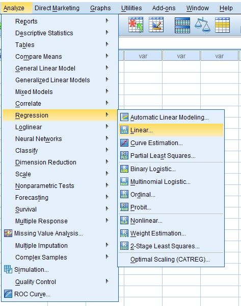
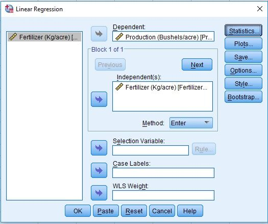

How to write a Research Paper and Hands on Training of SPSS - A Statistical Tool
Data Science
Statistics
Research
SPSS
Introduction
Statistics
- Statistics deals with uncertainty & variability
- Statistics turns data into information
- Data -> Information -> Knowledge -> Wisdom
- Statistics is the interpretation of Science
- Statistics is the Art & Science of learning from data
{kind=link}
Variable
- Characteristic that may vary from individual to individual
Measurement
- Process of assigning numbers or labels to objects or states in accordance with logically accepted rules
Measurement Scales
- Nominal Scale: Obersvations may be classified into mutually exclusive & exhaustive categories
- Ordinal Scale: Obersvations may be ranked
- Interval Scale: Difference between obersvations is meaningful
- Ratio Scale: Ratio between obersvations is meaningful & true zero point
Descriptive Statistics
- No of observations
- Measures of Central Tendency
- Measures of Dispersion
- Measures of Skewness
- Measures of Kurtosis
Example
| Fertilizer (Kg/acre) | Production (Bushels/acre) |
|---|---|
| 100 | 70 |
| 200 | 70 |
| 400 | 80 |
| 500 | 100 |
Analyze > Descriptive Statistics > Descriptives …
{kind=link}
{kind=link}
{kind=link}
{kind=link}
{kind=link}
Boxwhisker Diagram
- Pictorial display of five number summary (Minimum, Q1, Q2, Q3 and Maximum)
Example
| Yield | Variety |
|---|---|
| 5 | V1 |
| 6 | V1 |
| 7 | V1 |
| 15 | V2 |
| 16 | V2 |
| 17 | V2 |
{kind=link}
Graphs > Legacy Dialogs > Scatter/Boxplot …
{kind=link}
{kind=link}
{kind=link}
Regression Analysis
- Quantifying dependency of a normal response on quantitative explanatory variable(s)

Simple Linear Regression
- Quantifying dependency of a normal response on a quantitative explanatory variable
Example
| Fertilizer (Kg/acre) | Production (Bushels/acre) |
|---|---|
| 100 | 70 |
| 200 | 70 |
| 400 | 80 |
| 500 | 100 |
{kind=link}
Graphs > Legacy Dialogs > Scatter/Dot …
{kind=link}
{kind=link}
{kind=link}
{kind=link}
Analyze > Regression > Linear …
 

{kind=link}
{kind=link}
{kind=link}
Exercise
| Fertilizer | Yield |
|---|---|
| 0.3 | 10 |
| 0.6 | 15 |
| 0.9 | 30 |
| 1.2 | 35 |
| 1.5 | 25 |
| 1.8 | 30 |
| 2.1 | 50 |
| 2.4 | 45 |
Exercise
| Weekly Income ($) | Weekly Expenditures ($) |
|---|---|
| 80 | 70 |
| 100 | 65 |
| 120 | 90 |
| 140 | 95 |
| 160 | 110 |
| 180 | 115 |
| 200 | 120 |
| 220 | 140 |
| 240 | 155 |
| 260 | 150 |
Multiple Linear Regression
- Quantifying dependency of a normal response on two or more quantitative explanatory variables
Example
| Fertilizer (Kg) | Rainfall (mm) | Yield (Kg) |
|---|---|---|
| 100 | 10 | 40 |
| 200 | 20 | 50 |
| 300 | 10 | 50 |
| 400 | 30 | 70 |
| 500 | 20 | 65 |
| 600 | 20 | 65 |
| 700 | 30 | 80 |

Analyze > Regression > Linear …
{kind=link}
{kind=link}
{kind=link}
{kind=link}
{kind=link}
Correlation Analysis
- Linear Relationship between Quantitative Variables
Simple Correlation Analysis
- Linear Relationship between Two Quantitative Variables
- \(\left(X_{1},X_{2}\right)\)
Example
| Sparrow Wing length (cm) | Sparrow Tail length (cm) |
|---|---|
| 10.4 | 7.4 |
| 10.8 | 7.6 |
| 11.1 | 7.9 |
| 10.2 | 7.2 |
| 10.3 | 7.4 |
| 10.2 | 7.1 |
| 10.7 | 7.4 |
| 10.5 | 7.2 |
| 10.8 | 7.8 |
| 11.2 | 7.7 |
| 10.6 | 7.8 |
| 11.4 | 8.3 |
{kind=link}
Analyze > Correlate > Bivariate …
{kind=link}
{kind=link}
{kind=link}
Partial Correlation Analysis
- Linear Relationship between Quantitative Variables while holding/keeping all other constants
- \(\left(X_{1},X_{2}\right)|X_{3}\)
Example
| Leaf Area (cm^2) | Leaf Moisture (%) | Total Shoot Length (cm) |
|---|---|---|
| 72 | 80 | 307 |
| 174 | 75 | 529 |
| 116 | 81 | 632 |
| 78 | 83 | 527 |
| 134 | 79 | 442 |
| 95 | 81 | 525 |
| 113 | 80 | 481 |
| 98 | 81 | 710 |
| 148 | 74 | 422 |
| 42 | 78 | 345 |

Analyze > Correlate > Partial …
{kind=link}
{kind=link}
{kind=link}
Citation
BibTeX citation:
@online{yaseen2019,
author = {Yaseen, Muhammad},
title = {How to Write a {Research} {Paper} and {Hands} on {Training}
of {SPSS} - {A} {Statistical} {Tool}},
date = {2019-04-18},
url = {https://myaseen208.com/blogs/2019-04-18-UOL/},
langid = {en}
}
For attribution, please cite this work as:
Yaseen, Muhammad. 2019. “How to Write a Research Paper and Hands
on Training of SPSS - A Statistical Tool.” April 18, 2019. https://myaseen208.com/blogs/2019-04-18-UOL/.